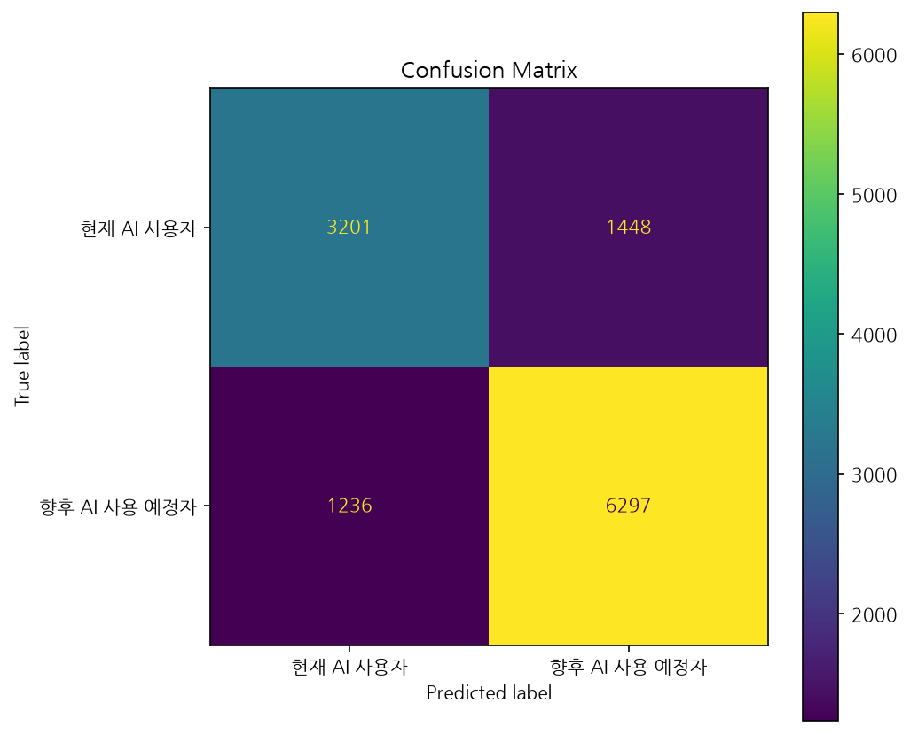
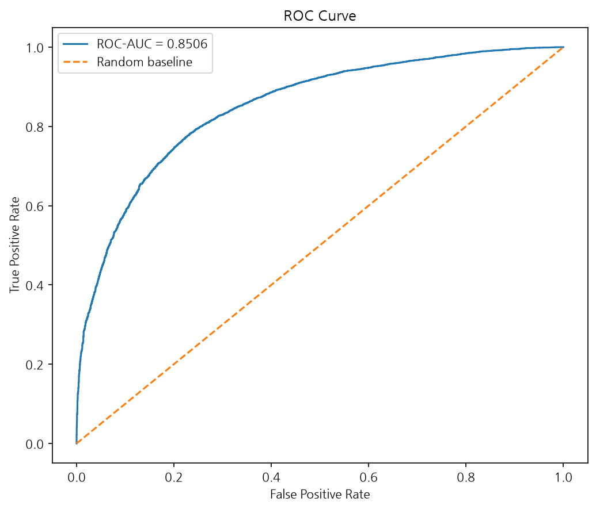

생성 시각: 2026-08-06 17:40:20
평가 데이터 수: 12182건
| precision | recall | f1-score | support | |
|---|---|---|---|---|
| 현재 AI 사용자 | 0.7214 | 0.6885 | 0.7046 | 4649.0000 |
| 향후 AI 사용 예정자 | 0.8130 | 0.8359 | 0.8243 | 7533.0000 |
| accuracy | 0.7797 | 0.7797 | 0.7797 | 0.7797 |
| macro avg | 0.7672 | 0.7622 | 0.7645 | 12182.0000 |
| weighted avg | 0.7781 | 0.7797 | 0.7786 | 12182.0000 |


Accuracy는 전체 테스트 데이터 중 모델이 올바르게 분류한 비율이다.
Precision은 모델이 향후 AI 사용 예정자라고 예측한 사람 중 실제 해당 집단의 비율이다.
Recall은 실제 향후 AI 사용 예정자 중 모델이 해당 집단을 찾아낸 비율이다.
F1-score는 Precision과 Recall을 함께 고려한 평가 지표다.
ROC-AUC는 두 집단을 구분하는 전반적인 모델의 능력을 나타낸다.